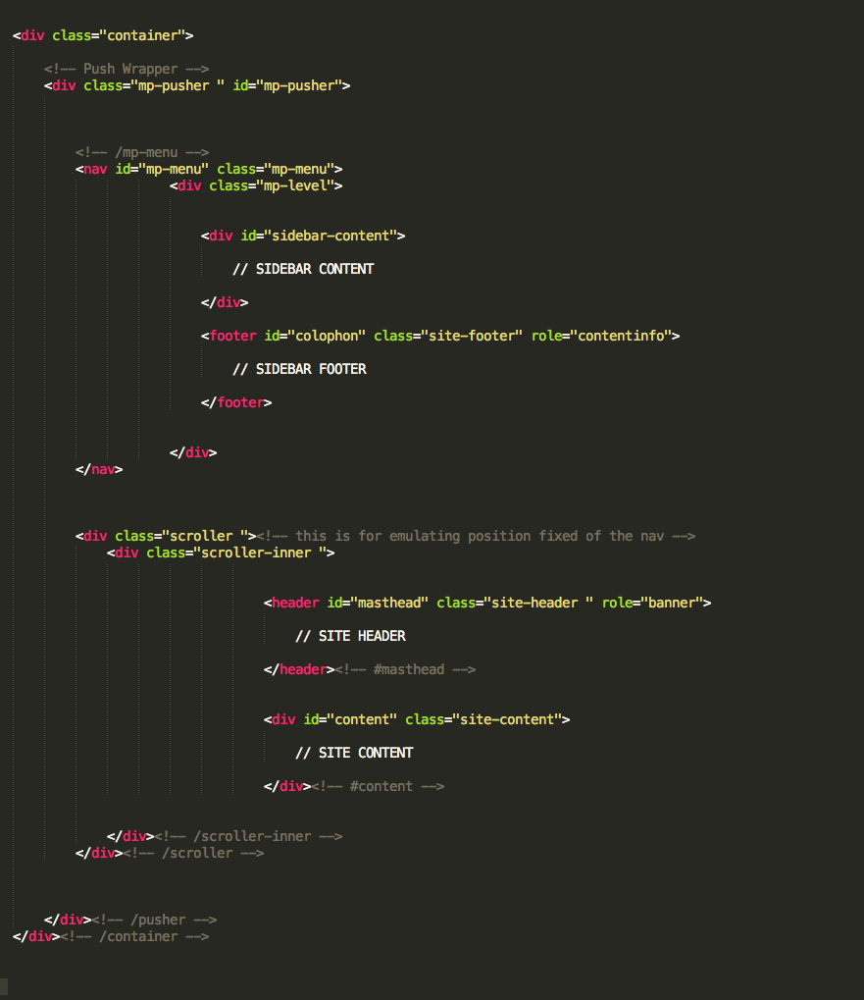
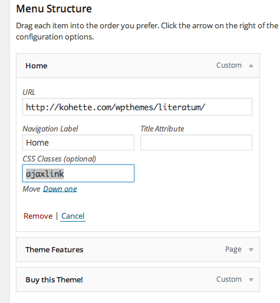
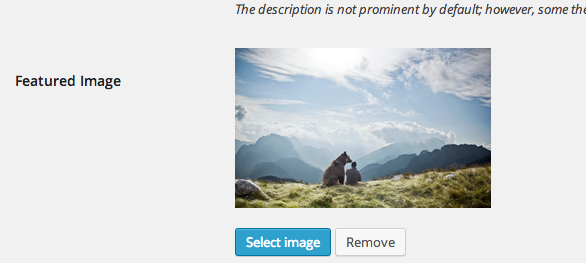
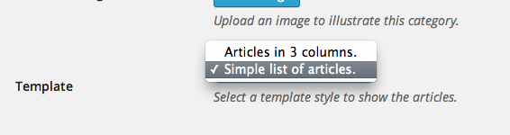
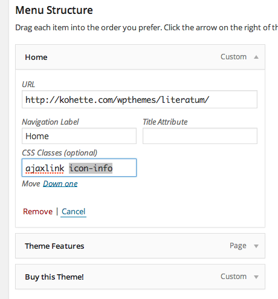

Thank you for purchasing my theme. If you have a related question that is not answered throughout this documentation feel free to contact me through the contact form on my profile page on Themeforest. Thanks so much!
This theme is a fixed layout with two columns. The main content is nested within a div with the "content" id. The second column is the sidebar, it is hidden by default and contains the widgets that make up the site sidebar under a nested div with the "sidebar-content" id. The general structure of the theme remains the same throughout all its pages. This is the general structure.

Literatum uses several stylesheets ordered within the CSS folder of the theme. This is the list of stylesheets containing the explanation of everyone.
This theme imports three Javascript files.
To install Literatum on your Wordpress site you just have to get in the wordpress administration and follow the next steps.
NOTE: If the above process fails, you can upload the theme to your hosting by loading the "Literatum" folder (as a result of unzipping the literatum.zip file) via FTP to the "themes" folder in your Wordpress installation and it will be available on the administration area.
Firstly you have to ensure that the configuration of the main page is correct: Go into "Settings -> Reading" in the Wordpress admin and make sure the "Your latest posts" option in the "Front page displays" is selected. Downwards you can set the number of posts you want to show up on each page.
Follow these first steps to configure the most general aspects of your website.
Set menus
In Literatum two main menu areas are availables:
Primary Menu. It appears in the upper-right corner of the page. The idea of this menu is to highlight two or three sections or pages of the website. It is not advisable to put many links because it would mess the layout style.
Sidebar Bottom Menu. This menu is shown continuously on the lower left side of the sidebar and is designed to add policy and boring links such as the Privacy Policy or Terms of Use.
Logo and favicon upload
To upload a logo and favicon for your website, go to the Wordpress admin and click "Settings". On the page that appears, look for the section "Site logo & favicon" and click "select file" on the "Logo image" option to upload an image to be used as a logo for your website. Follow the same process on the "Favicon" option to upload an image to be used as the site favicon.
NOTE: For the favicon is recommended to use an image of less than 50x50 pixels and in PNG or GIF format.
Enable dynamic navigation (AJAX)
To enable AJAX navigation on the site go to the "Settings" section on the Wordpress admin page and, on the new page, activate the "AJAX Navigation" box.
To make the links on the created menus on Wordpress use AJAX navigation, you just have to enter the text "ajaxlink" on the "CSS Classes" field in the properties of the link. As seen on the picture below.

NOTE: If it does not appear the "CSS Classes" field by default, click on "Screen Options" (upper-right corner) and check the CSS Classes box.
Link images to categories.
In Literatum an image can be chosen as an outstanding image of a particular category. You just have to go to the admin page of the category and fill out the "Featured image" field by uploading a picture or selecting it from the existing ones in your Wordpress uploads folder.

This image will appear in the header of the category page. In case of not uploading an image, it will appear the image of the last article that belongs to the category.
Assign template to category.
Literatum has two different styles for category pages.
To assign a template to a specific category, you just have to go to the edit page of the category and set the "Template" option by selecting the template style you want for the category.

Set social media.
Go to Settings / General page and fill in the contained fields on the "Social Media" section. This information serves to complete the share links of the article.
Enable Twitter Cards: Literatum is prepared to work with twitter cards, but to have this option available on your site you need Twitter to authorize your domain to use them: Go to the Twitter validator, choose the "Large Image Summary" option and, on the new page, activate the "validate & apply" tab. To request Twitter to authorize your site, enter the url on some of your articles on your website and click on "Go!". Twitter will try to access your site through your url and when the information is loaded you must click on the "Request approval" button.
Create an interview.
Literatum incorporates two new buttons to the content editor of the posts to add questions and answers in the article.
To indicate that a text string is a question, you just have to select the text and click the "Q" icon button. This will encapsulate the selected text between the tags [question] and [/question]
To indicate that a text string is an answer, you just have to select the text and click the "A" icon button. This will encapsulate the selected text between the tags [answer] and [/answer]
A question and answer text will look like this in the content editor:
[question]How long have you been in Asia now?[/question] [answer]Actually I just realized it’s been a year already. Boy, how time flies when you’re having fun.[/answer]
If you also fill in the "Interview variables" box fields, the article may contains the name of the interviewer and the interviewee along with questions and answers.
.
Estampable contains a range of over 400 icons that you can display on the content items or on any other menu of the website.
You can consult the full list here.
Display icons on a text.
To display an icon on your website anywhere where you can enter text, use the HTML "i" element with the code of the icon as shown below.
This will show the icon information (icon-info)
<i></i>
Display icons in menus.
To accompany any menu item with a custom icon, you just have to add as class the id of the selected icon on the attributes of the item. For example, if we want an item to be accompanied by an information icon, we must enter the "icon-info" id in the CSS Classes field.

I've used the following images, icons or other files as listed.
Once again, thank you so much for purchasing this theme. As I said at the beginning, I'd be glad to help you if you have any questions relating to this theme. No guarantees, but I'll do my best to assist. If you have a more general question relating to the themes on ThemeForest, you might consider visiting the forums and asking your question in the "Item Discussion" section.
Rafael Martín